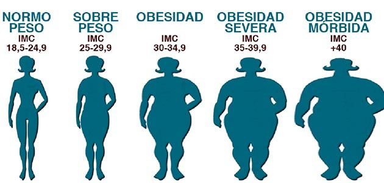

Ingrese su peso en kilogramos y su altura en metros:
Su Índice de Masa Corporal (IMC) es:
Interpretación del IMC:
El índice de masa corporal (IMC) es un número que se calcula con base en el peso y la estatura de la persona.
Para la mayoría de las personas, el IMC es un indicador confiable de la gordura y se usa para identificar las categorías de peso que pueden llevar a problemas de salud.
